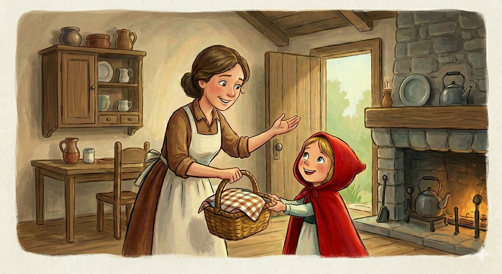

La Misión
Un día, su madre le pidió un favor:
"Caperucita, tu abuelita está enferma. Por favor, llévale esta cesta
con pasteles y mantequilla. Pero ten cuidado, ve directo a su casa y
no hables con extraños en el bosque".
El Encuentro
Caperucita se adentró en el bosque.
En el camino, se cruzó con el Lobo Feroz. El lobo, con voz amable, le
preguntó a dónde iba. Olvidando el consejo de su madre, la niña le
contó que iba a ver a su abuela. El lobo, astuto, le sugirió que
recogiera flores mientras él tomaba un "atajo".
El Engaño
El lobo corrió hacia la casa de la
abuela, llegó antes y se la tragó de un bocado. Luego, se vistió con
la ropa de la anciana y se metió en la cama a esperar. Cuando
Caperucita llegó, notó algo extraño y dijo:
—¡Abuelita, qué ojos
tan grandes tienes!
—Son para verte mejor, querida.
—¡Abuelita,
qué orejas tan grandes tienes!
—Son para oírte mejor.
—¡Abuelita,
qué dientes tan grandes tienes!
—¡Son para comerte mejooor!
—gritó el lobo, saltando sobre ella.
El Rescate
Por suerte, un valiente cazador que
pasaba cerca escuchó los gritos. Entró corriendo a la cabaña, logró
asustar al lobo (o vencerlo) y rescató a Caperucita y a su abuelita,
quienes salieron sanas y salvas del armario.